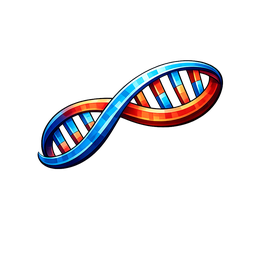
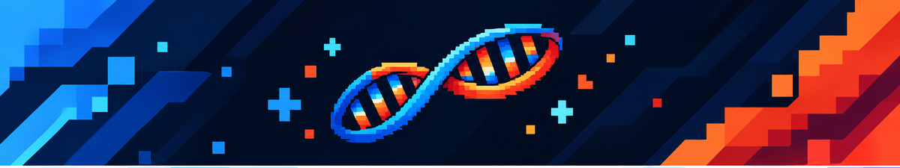

Que hace
Morphy te permite transformarte en casi cualquier mob o bloque del juego, con modelo, tamaño y hitbox sincronizados para todos los jugadores.
Mobs
Bloques
Hitbox
Sync

Morphy Wiki
Mod
Conviertete en casi cualquier mob o bloque de Minecraft con un sistema de morph simple e intuitivo: modelos, tamaños y hitboxes sincronizados en tiempo real.
Sistema de transformacion: convierte tu personaje en mobs o bloques con una GUI simple de buscar y previsualizar.
Morphy te permite transformarte en casi cualquier mob o bloque del juego, con modelo, tamaño y hitbox sincronizados para todos los jugadores.
El menu en pantalla permite buscar y explorar cada morph disponible con una previsualizacion en vivo antes de aplicarlo.
Funciona con entidades modeadas ademas del contenido vanilla, y esta disponible para Fabric, Forge y NeoForge.
Comandos principales para abrir el menu y aplicar, quitar o restablecer tu morph.
/morph menu
Abre el menu grafico para buscar y previsualizar morphs disponibles.
/morph set <mob_o_bloque>
Aplica el morph indicado directamente por comando.
/morph clear
Quita el morph actual.
/morph normal
Vuelve a tu forma de jugador normal.
Compatibilidad indicada en Modrinth.
Guia simple para empezar como en la pagina del proyecto.
/morph menu y busca el mob o bloque que quieras./morph set zombie./morph normal o quita el morph con /morph clear.Accesos rapidos a las paginas principales del proyecto.